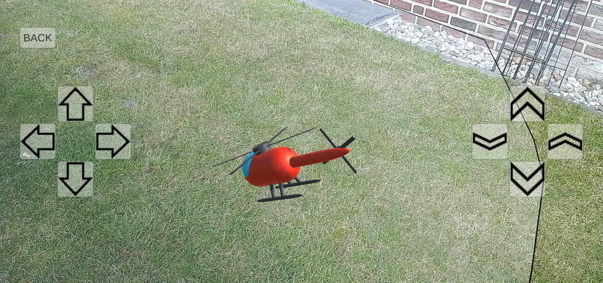
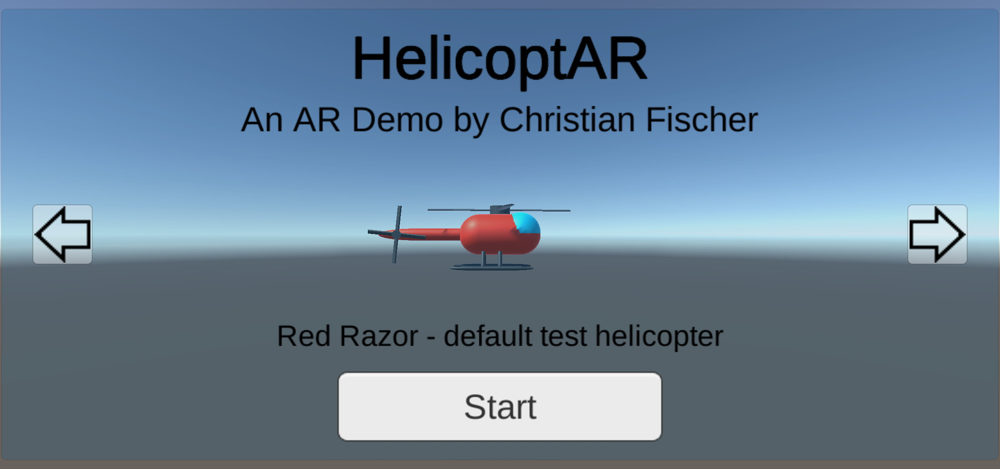
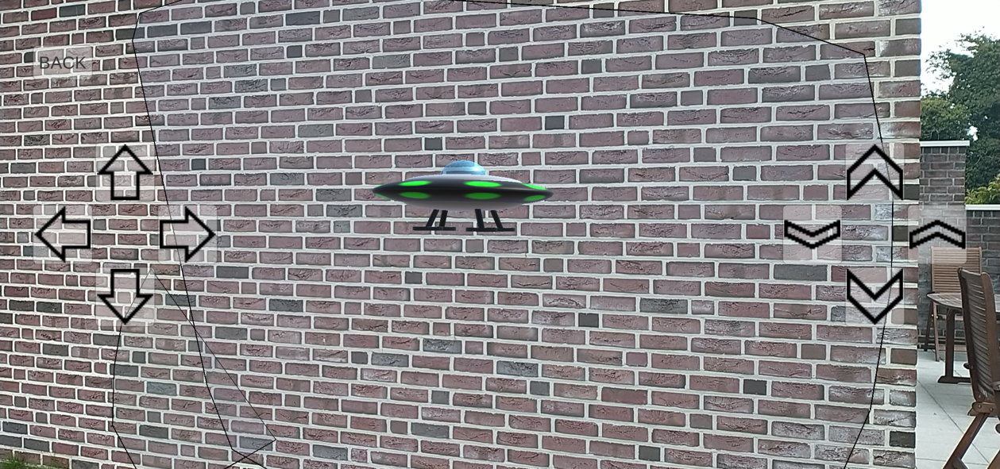

|



|
HelicoptAR
Markerless AR demo simulating a miniature helicopter
Description:
AR Demo: Navigate a small, virtual helicopter in a real world environment.
One of 4 3D-helicopters can be chosen.
The vehicles collide with detected vertical and horizontal surfaces.
The project is based on Unity and up to this point, provided for Android only.
It is motivated by the question, which aspects of an AR application make it feel immersive and which aspectes make the use of AR essential at all.
This requires a high amount of real world interaction, which is not only provided by collision with real world surfaces.
The helicpoter also simulates real world gravity as well as the experienced sound volume depending on real world distance to the virtual source.
Further helicopter models could easily be added to the project.
Supported Platforms:
Android (ARCore support required)
Last Update:
23.09.2021 (v0.3)
Links:
|